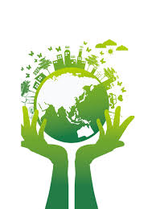
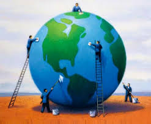
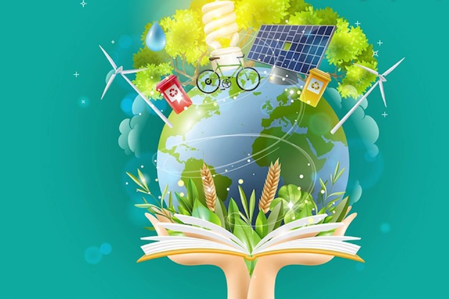

PRINCIPIOS DE DESARROLLO SUSTENTABLE.
¿CÓMO PUEDEN CAMBIAR EL FUTURO?

Esta foto de Autor desconocido está bajo licencia CC BY-SA-NC
Información obtenida del sitio web de la organización Greentech, para práctica educativa
el 25 de octubre de 2023. https://www.greentecher.com/descubre-los-principios-del-desarrollo-sustentable/
Los principios del desarrollo sustentable nos guían en este camino hacia un futuro más próspero y armonioso. ¡Lo que todos queremos! Pero, para definirlos, es necesario conocer que existen tres ejes fundamentales de los cuales se desprenden.
En éste contexto, podemos decir que los principios básicos del desarrollo sustentable tienen un gran alcance. ¿De qué se trata todo esto y cómo define lo que sucederá con las próximas generaciones? ¡Vamos a verlo!
¿Cuáles son los principios del desarrollo sustentable y por qué son importantes?
Los principios del desarrollo sustentable son los siguientes:
- Respeto por el medio ambiente y la biodiversidad.
- Uso responsable de los recursos naturales.
- Equidad social y justicia económica.
- Participación ciudadana y toma de decisiones colectivas.
- Educación y conciencia ambiental para el cambio positivo.
Sí, son 5 principios de la sustentabilidad, todos ellos provenientes de una misma base, la cual se divide en 3 ejes (como te decíamos en la intro). ¿Cuáles son? Eje ambiental, económico y social.
Estos persiguen un mismo objetivo, que no es otro que el desarrollo socioeconómico de la población, orientar y educar al ser humano para que sea capaz de hacer un uso eficiente de los recursos ambientales que tenemos disponibles y a su vez preservarlos.
1. Respeto por el medio ambiente y la biodiversidad
 Podemos decir que este es el principio fundamental del desarrollo sustentable, ¿por qué? Es que este sostiene que el ser humano debe ser consciente acerca de los problemas ambientales que han ocasionado viejas costumbres y prácticas a través de los años.
Podemos decir que este es el principio fundamental del desarrollo sustentable, ¿por qué? Es que este sostiene que el ser humano debe ser consciente acerca de los problemas ambientales que han ocasionado viejas costumbres y prácticas a través de los años.
¿Quieres un ejemplo? Se han generado daños considerables a los recursos naturales, como:
- La deforestación descontrolada.
- La contaminación del aire y el agua a través del crecimiento de la industria.
- La pérdida de biodiversidad, generalmente derivada de la propia contaminación o a consecuencia de la caza ilegal.
¿Lo ves? Es imprescindible establecer mecanismos de control y educación de la población. Pero, ¿cómo se logra esto? Adoptando medidas para el cuidado del medio ambiente, que incluyan protocolos para la protección de los seres vivos y la conservación de especies en sus hábitats naturales.
2. Uso responsable de los recursos naturales
 Para definir éste principio es necesario reconocer que el ser humano ha tenido por costumbre, durante muchos años, una idea equivocada acerca de la disponibilidad y el uso de los recursos naturales. ¿No lo crees?
Para definir éste principio es necesario reconocer que el ser humano ha tenido por costumbre, durante muchos años, una idea equivocada acerca de la disponibilidad y el uso de los recursos naturales. ¿No lo crees?
Estamos contribuyendo al agotamiento y a la desaparición de ecosistemas, trayendo como consecuencia un grave aumento en la pérdida de la biodiversidad y por ende, del calentamiento global.
- Fomentar el uso eficiente de los mismos, educando a la población respecto a cada recurso que tenga a la mano.
- Apostar, en la medida de lo posible, al reciclaje y a la reutilización de recursos.
- Va desde la sencillez del cuidado del agua hasta la generación y uso de energías renovables.
3. Equidad social y justicia económica

Sobre éste principio, no hay que dejar de lado que es uno de los temas más relevantes en el mundo actual. Pero, en la práctica no ha sido tan fácil como lo dice la teoría.
- La preparación de un gran equipo humano, con capacidades en seguridad y justicia.
- Personas íntegras, orientadas a cumplir las leyes, para crear una sociedad más justa.
4. Participación ciudadana y toma de decisiones colectivas

Para alcanzar los objetivos del desarrollo sustentable, es importante que los ciudadanos puedan tener participación. La sociedad no puede evaluar el desempeño político si no está involucrada con el proceso. En una sociedad justa y participativa, el ciudadano es el protagonista.
5. Educación y conciencia ambiental para el cambio positivo

Ser conscientes de que la intervención del hombre es una de las razones del deterioro ambiental es el punto de partida para empezar a intervenir. Se hace necesario preparar iniciativas para educar a la población desde temprana edad y abandonar las costumbres del uso desproporcionado de recursos.
El futuro depende del cumplimiento de los principios del desarrollo sustentable
Es importante poner en marcha proyectos de desarrollo sustentable porque nuestro planeta enfrenta desafíos ambientales cada vez más urgentes. Adoptar una mentalidad sustentable nos ayuda a mitigar problemas y crear un futuro saludable para las generaciones venideras.
¡Claro que sí podemos marcar la diferencia!